Albino Twins — Reading, UK, 2008
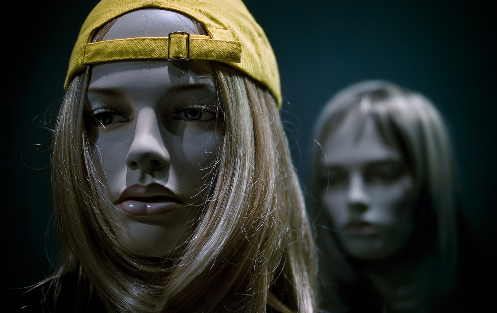
Bad Conscience — Nagyvárad, Romania, 2008
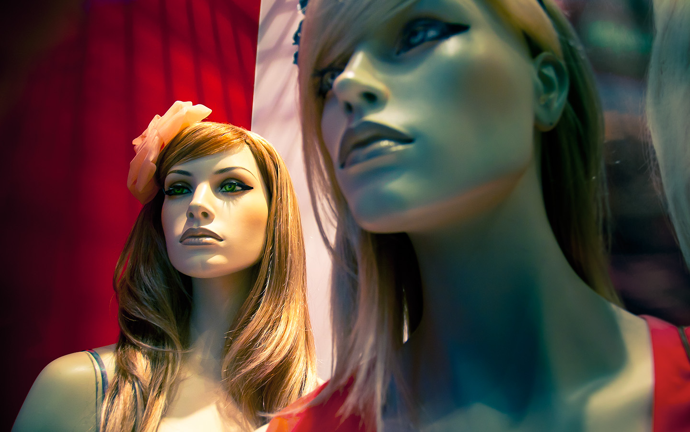
Blue Velvet — Brisbane, Australia, 2011
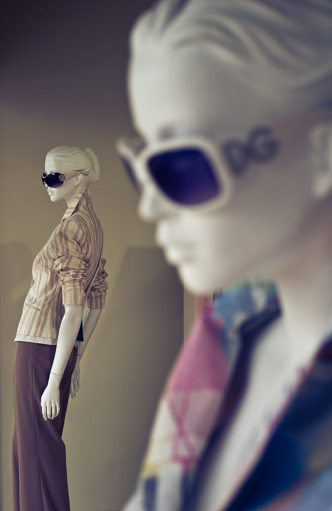
Double Dolce — Mooloolaba, Australia, 2011
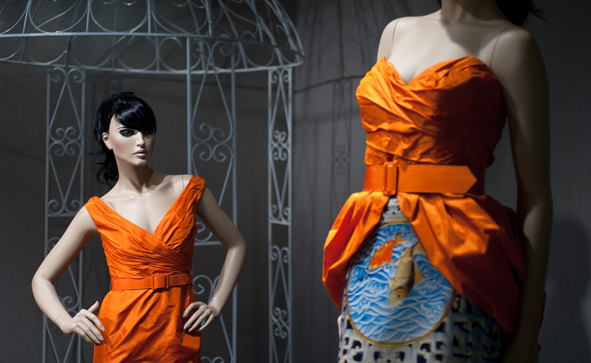
Mandarine Sisters — Singapore, 2012
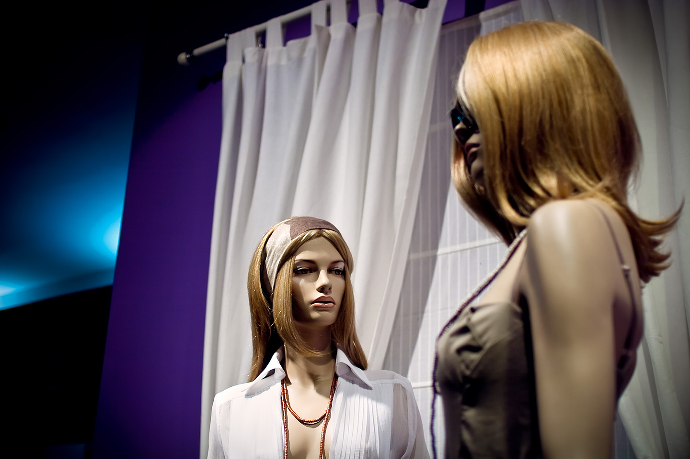
Alter Ego — Nagyvárad, Romania, 2009

Memories of Sarah — Sydney, Australia, 2011
Miss Blurryhand — Bern, Switzerland, 2007
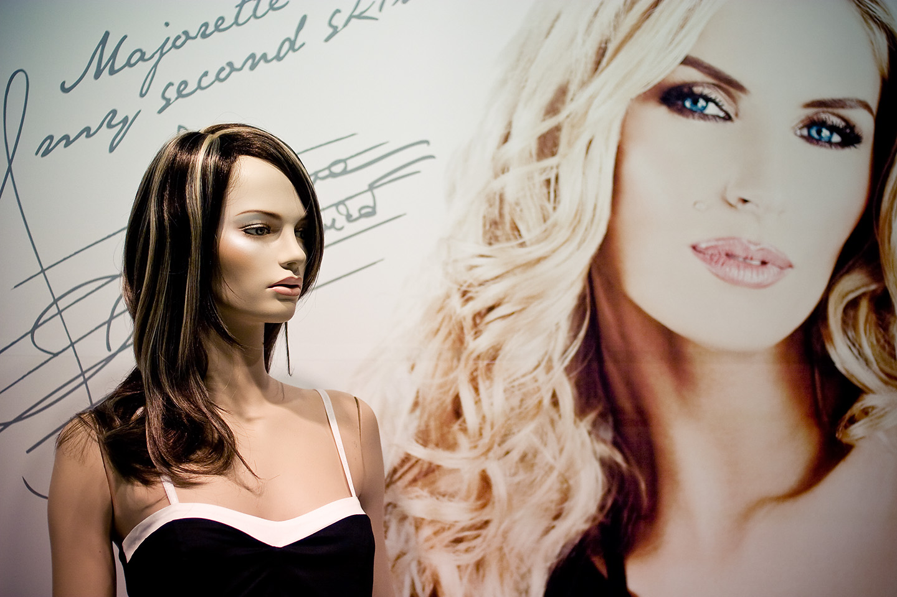
Second Skin — Nagyvárad, Romania, 2008
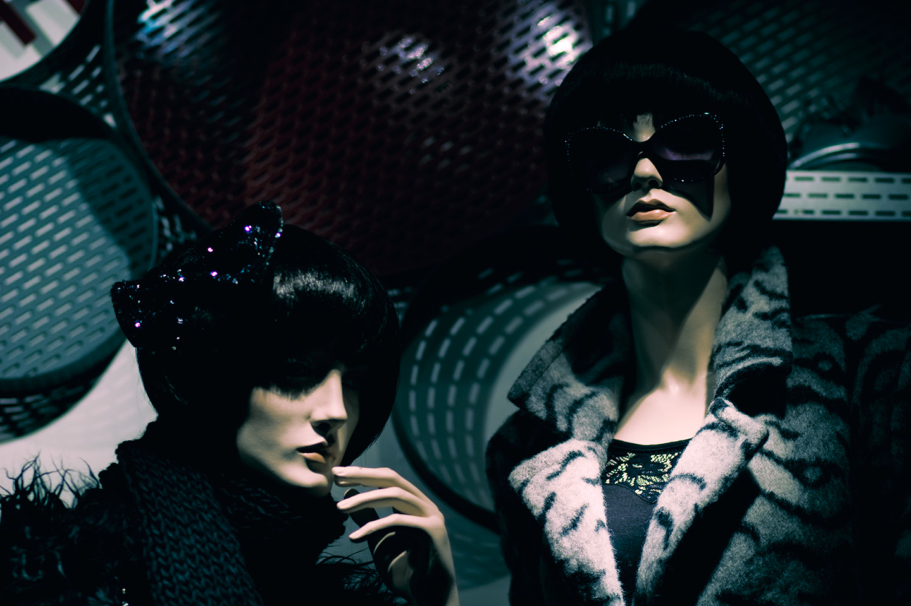
They Lurk at Night — Budapest, Hungary, 2009
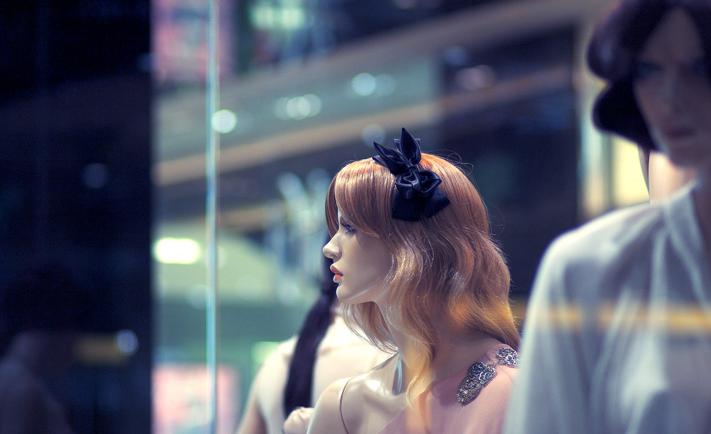
Patty Parallax — Sydney, Australia, 2011
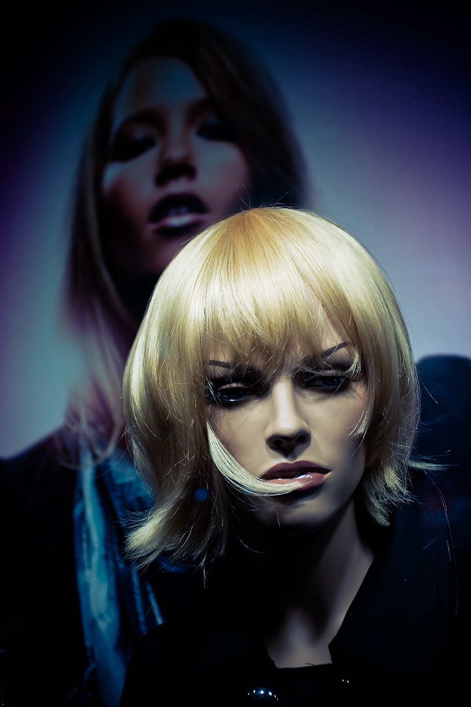
Alterego — Nagyvárad, Romania, 2008
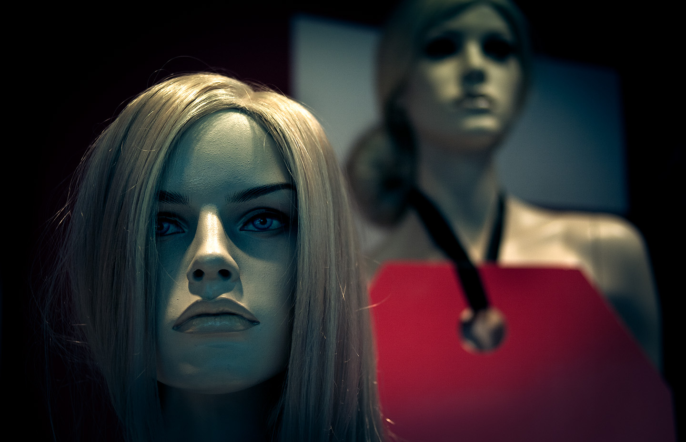
Metal Gear — Brisbane, Australia, 2012
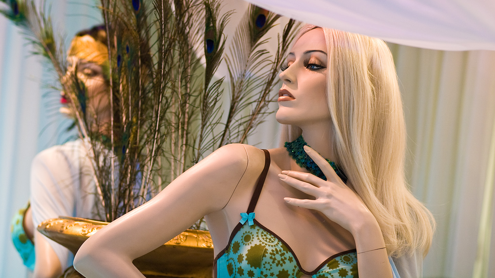
Pea Chicks — Rotterdam, Holland, 2008
Shadow — Sydney, Australia, 2011